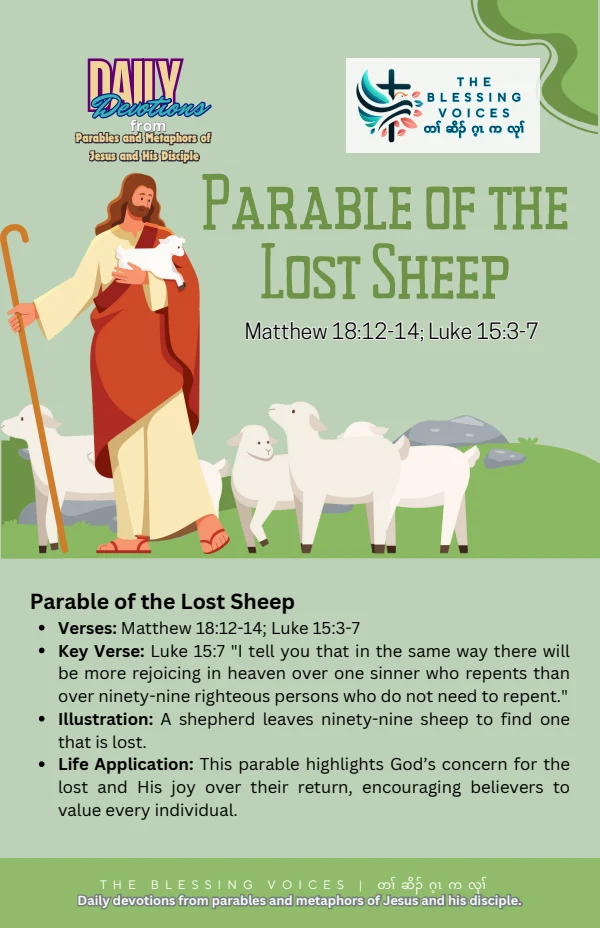

Introduction
Read this English paraphrase of the biblical passage alongside the original companion booklet. Context notes, devotional applications, reflection questions, and prayer are study aids rather than additional biblical text.
The Bible Story
Jesus described a shepherd with a hundred sheep who lost one. He left the ninety-nine in the open country and searched until he found it. Joyfully he carried it home on his shoulders and called friends and neighbours to celebrate. Jesus connected this joy with joy in heaven over one sinner who repents. This paraphrase follows Luke 15:3–7.
Historical and Biblical Context
CONTEXT & DEVOTIONAL INTERPRETATIONMatthew 18:12–14 uses a related lost-sheep illustration in teaching about the little ones. Luke places it alongside the Lost Coin and the story of two sons. Each setting deserves attention.
Spiritual Lessons
CONTEXT & DEVOTIONAL INTERPRETATIONThe illustration emphasizes seeking, the value of the one who is lost, and shared joy over repentance.
Practical Life Applications
CONTEXT & DEVOTIONAL INTERPRETATIONNotice someone who has become disconnected from community. Reach out with welcome and care rather than condemnation.
Reflection Questions
- What does the shepherd do after losing a sheep?
- How does Jesus explain the joy of finding it?
- How can you help someone feel welcomed rather than forgotten?
Closing Prayer
Lord God, help us hear your Word with humility. Guide our choices and teach us to respond with faith, mercy, and faithful action. Amen.
Continue your reflection.
Your free companion study booklet.
Download Free Booklet ↓PDF · Free download